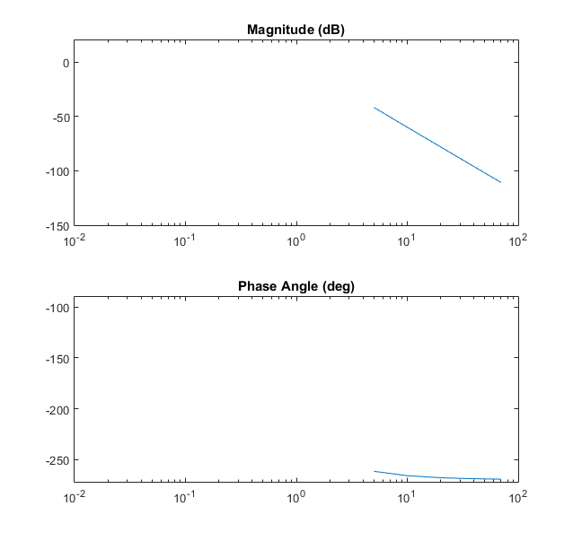
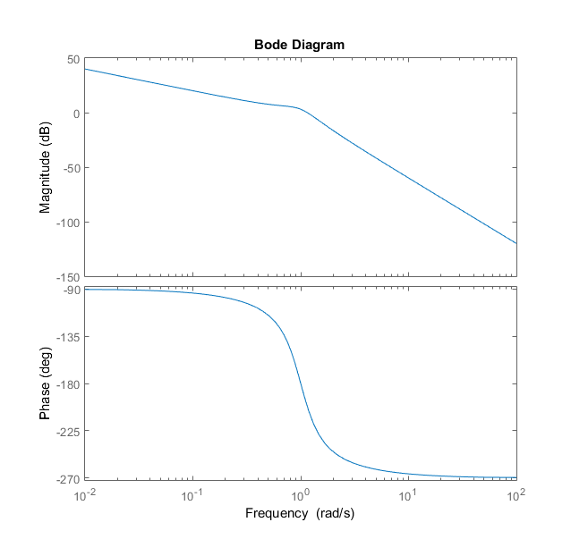
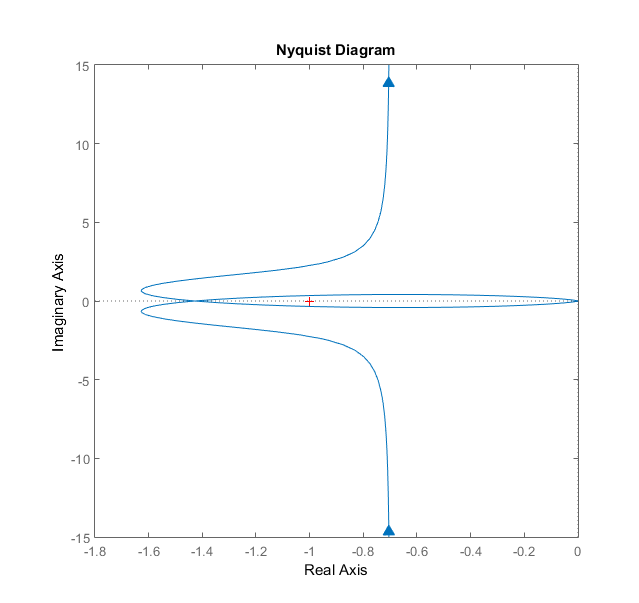

Contents
clear; clc;
Part A: Calculate Frequency Response
W = [0 5 10 20 30 50 70 inf];
for i = 1:length(W)
w = W(i);
m(i) = sqrt(1/((0.7*w^2)^2+(w-w^3)^2));
mdb(i) = 20*log10(m(i));
phi(i) = -(1.5*pi+atan(0.7*w/(1-w.^2)));
end
for i = 1:length(W)
phideg(i) = rad2deg(phi(i));
end
mat2(:,1)= W';
mat2(:,2)= m';
mat2(:,3)= mdb';
mat2(:,4)= phideg';
tab = (' w (rad/s) m mdB phi (deg)');
disp(tab)
disp(mat2)
w (rad/s) m mdB phi (deg)
0 Inf Inf -270.0000
5.0000 0.0082 -41.6750 -261.7029
10.0000 0.0010 -59.9344 -265.9555
20.0000 0.0001 -78.0454 -267.9904
30.0000 0.0000 -88.6200 -268.6619
50.0000 0.0000 -101.9356 -269.1976
70.0000 0.0000 -110.7045 -269.4269
Inf NaN NaN NaN
Part B: Plot the Results in Polar Form
figure(1)
subplot(2,1,1)
semilogx(W,mdb)
axis([1e-2 1e2 -150 20])
title('Magnitude (dB)')
subplot(2,1,2)
semilogx(W,phideg)
axis([1e-2 1e2 -272 -90])
title('Phase Angle (deg)')

Part C: Verify with MATLAB
TF = tf([1],[1 0.7 1 0]);
figure(2)
bode(TF)
figure(3)
nyquist(TF)
 